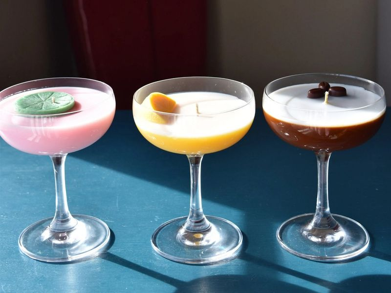
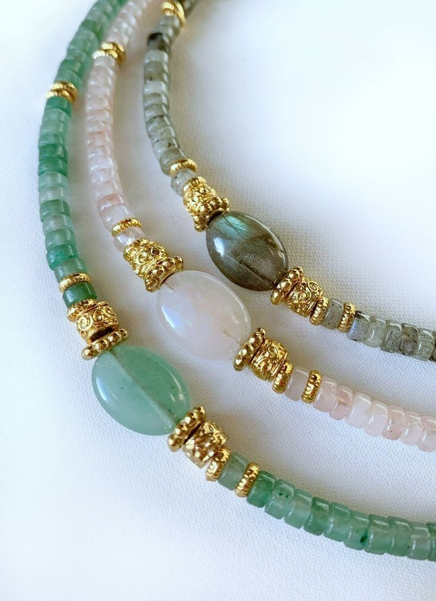

Onze Workshops
Ontdek Aardblij door heel Nederland! Wilt u een bedrijfsafdeling eens iets heel anders laten ervaren, wilt u een creatieve verjaardag, of zoekt u een ontspannende bezigheid als onderdeel van een vriendenweekend? Dan is een van onze populaire workshops misschien wel iets voor u!
Onze workshops worden hoog gewaardeerd door de deelnemers. Wij geven workshops in diverse stijlen: schilderen, kaarsen maken, mozaïeken en nog veel meer! Wij verzorgen onze workshops zowel bij u op locatie als in ons eigen atelier in de Betuwe.

Cocktail Kaarsen Maken
Maak uw eigen geurende cocktailgeïnspireerde kaarsen. Leer alles over wax, geuren en kleurtoevoeging van onze experts. Perfecte handgemaakte geschenken!
Meer informatie
Schilderen tussen Alpacas
Schilder in een unieke setting omringd door vriendelijke alpaca's. Een rustige en inspirerende ervaring waar dieren en kunst samenkomen.
Meer informatie
Sieraden Maken
Ontwerp en maak uw eigen unieke armbanden en kettingen met prachtige kralen. Onze ervaren makers leren u de mooiste kraaltechnieken.
Meer informatie